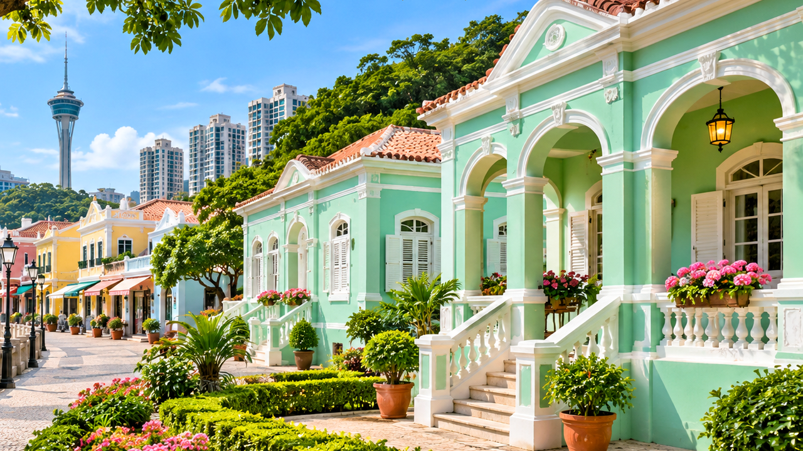

القبلة
شقغج➤
—°
الفجر—
الشروق—
الظهر—
العصر—
المغرب—
العشاء—
🌤️ حالة الطقس
مكاو—حالة الطقس
تايبا—حالة الطقس
كوتاي—حالة الطقس
كولوان—حالة الطقس
اختر المنطقة
 📍 أطلال سانت بول
📍 أطلال سانت بولشبه جزيرة مكاو
Macau Peninsula · 澳門半島أطلال سانت بول وساحة سينادو وبرج مكاو، مع الأسواق والمعالم التاريخية.
74 مكانًا
📍 بيوت تايبا التراثيةتايبا
Taipa · 氹仔بيوت تايبا والقرية التراثية والكافيهات والمطاعم والأجواء البرتغالية.
34 مكانًا 📍 باريسيان وفينيشيان
📍 باريسيان وفينيشيانكوتاي
Cotai · 路氹المنتجعات الكبرى والمجمعات الفاخرة والعروض الليلية وأجواء كوتاي المضيئة.
71 مكانًا 📍 كنيسة القديس فرنسيس
📍 كنيسة القديس فرنسيسكولوان
Coloane · 路環كنيسة القديس فرنسيس وشاطئ هاك سا والطبيعة الهادئة والواجهة الساحلية.
16 مكانًامعلومات عن الوجهة
اكتشف مكاو 🇲🇴
195 مكانًا ضمن أربع مناطق سياحية، مع أسواق ومولات ومطاعم بيتزا وفنادق ومعالم ومواصلات. البحث شامل لجميع المناطق.